■ 단일 이미지
훅
대조(학원 vs)질문형
“🚨 지금 필요한 건 또 다른 학원이 아니라,”
넛지
무료 체험희소성(선착순)손실 회피
카피
광고 라이브러리 원본 ↗학원을 늘리는 대신 아이 수준에 맞춘 1:1 학습 전략·오답 관리·습관 형성 → 기말역전과외 무료수업
Meta 광고 라이브러리 · 대한민국 · 활성 광고 · '1:1 과외' 검색 → 중복 묶음 79종 + 화상과외 계열 키워드 · 2026-11-16 수집
기준: '1:1 과외' 검색(약 340건)을 Meta 광고 라이브러리의 총 노출수 높은 순으로 정렬한 순위 + 게재 시작일부터 오늘(11/16)까지 일수. 같은 소재를 여러 광고로 쪼갠 경우 가장 높은 순위·가장 오래된 시작일을 썼다. 노출수 숫자는 비공개라 순위로만 비교.
오래 돌면서 노출도 높음. 가장 먼저 참고할 소재.
✨ 설탭은 이렇게 다릅니다.
단일 · 10.14 시작 · 설탭
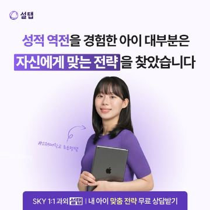
2학기 성적 역전한 아이들, 뭐가 달랐을까요?🧐
단일 · 10.14 시작 · 설탭
중학생을 위한 단 하나의 원 포인트 과외, 비상교육 온리원 레슨
단일·릴스 · 10.1 시작 · 비상교육 온리원 레슨
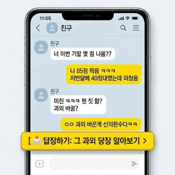
“지난 시험 40점대 였는데 이번엔 85점이라고요?” 😮
단일 · 10.7 시작 · 비전교육 아이엠쌤
“수학 40점대였는데 한 달 만에 85점? 이게 진짜 가능하다고요?” 😳
단일 · 9.8 시작 · 비전교육 아이엠쌤
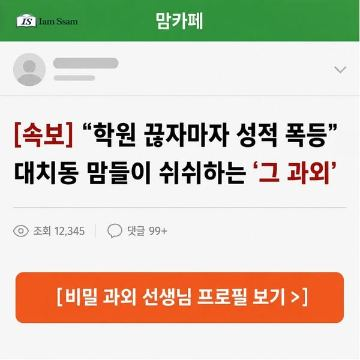
🚨 [속보] "학원 끊고 과외로 바꾸자마자 성적이 올랐어요!"
단일 · 7.30 시작 · 비전교육 아이엠쌤
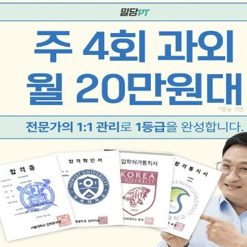
✅대한민국 상위 0.1%의 강력추천✅
단일 · 9.1 시작 · 에듀관리가이드
"엄마, 나 오늘 학원 가기 싫어..." 😭
단일 · 8.23 시작 · 비전교육 아이엠쌤
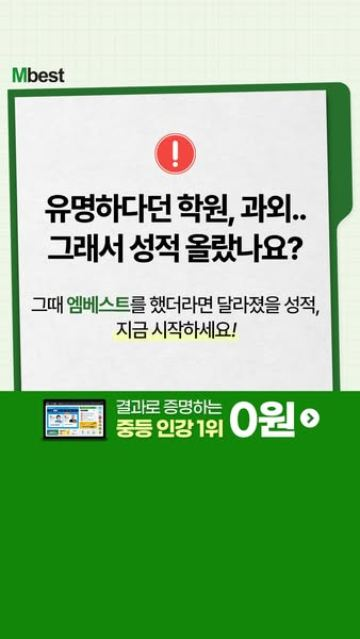
유명 학원도, 과외도 시켜봤는데
단일 · 8.31 시작 · 중등인강 1위 엠베스트
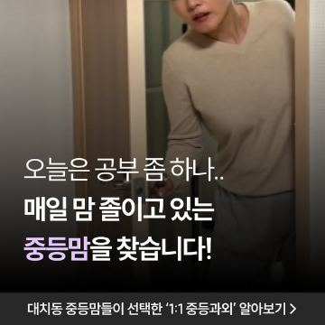
고등학교 가기 전 지금이 자기주도 습관을 만들 수 있는 마지막 타이밍입니다.
단일 · 9.29 시작 · 엄마학교
🚨 "학원비만 축내고 있을 건가요?" 언제까지 남의 집 아이 성적 올려주는 들러리
단일 · 8.10 시작 · 비전교육 아이엠쌤
지금 광고주가 밀고 있는 신작. 앞으로 2~3주 생존 여부를 보면 됨.
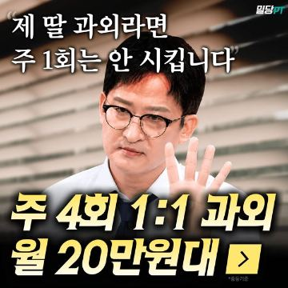
✨대한민국 상위 0.1%의 강력추천✨
단일 · 11.3 시작 · 밀당PT
중학생을 위한 단 하나의 원 포인트 과외, 비상교육 온리원 레슨
단일 · 11.11 시작 · 비상교육 온리원 레슨
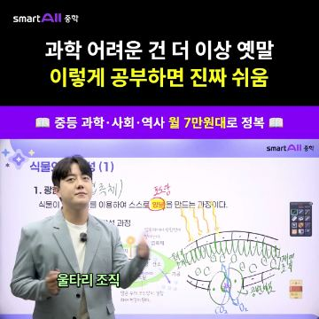
성적이 오를 수 밖에 없는 비법!📈
릴스 · 11.11 시작 · 스마트올중학
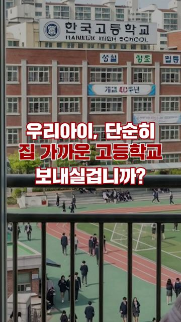
📢 대입 성공의 70%는 '고등학교 선택'에서 결정됩니다!
릴스 · 11.4 시작 · ezedu_insta
요즘 내신 🚨5등급제 근황🚨
릴스 · 11.15 시작 · ezedu_insta
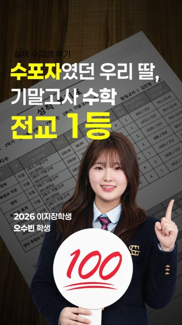
수포자였던 우리 딸이 수학 🔥전교 1등🔥
릴스 · 11.8 시작 · ezedu_insta
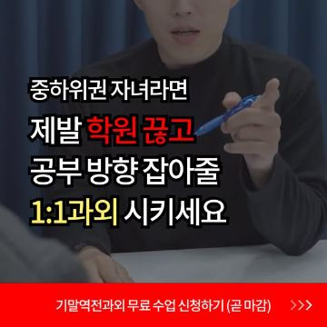
🚨 지금 필요한 건 또 다른 학원이 아니라,
단일 · 11.13 시작 · 입시달인
오래 켜져 있지만 예산이 거의 안 붙는 소재. 참고 우선순위 낮음.
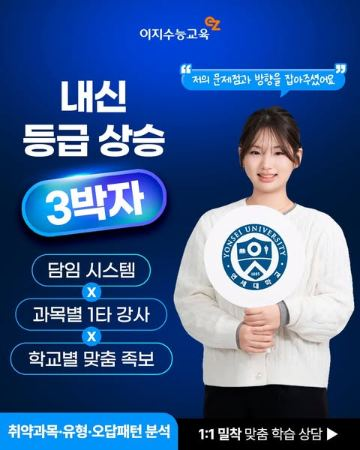
이 3가지만 챙기면 내신 등급 급상승⤴️
단일 · 10.1 시작 · ezedu_insta
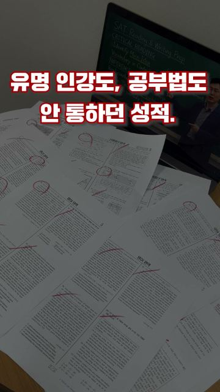
딱 하나 바꾸니 불수능에도 2등급 상승🔥
릴스 · 10.1 시작 · ezedu_insta
중학교에서 A등급을 받아도
단일 · 10.1 시작 · ezedu_insta
⚠️학원, 과외 성적이 오르지 않는다면⚠️
단일·캐러셀 · 9.15 시작 · 아침밥공부
열심히는 하는데 항상 성적은 그대로?
단일 · 10.1 시작 · ezedu_insta
공부는 열심히 하는데 왜 내신 성적은 제자리일까? 😥
단일 · 10.1 시작 · ezedu_insta
🎓 실제 이지수능교육 선배가 증명하는 성적 역전 공식
단일 · 10.1 시작 · ezedu_insta
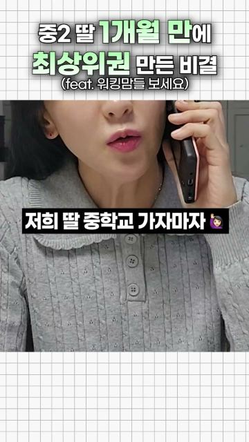
워킹맘분들 중학생 공부 어떻게 시키고 계세요?
릴스 · 9.29 시작 · 엄마학교
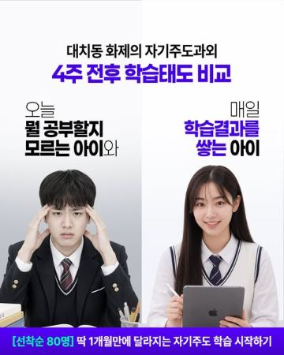
고등학교 가기 전 지금이 자기주도 습관을 만들 수 있는 마지막 타이밍입니다.
단일 · 9.29 시작 · 입시달인
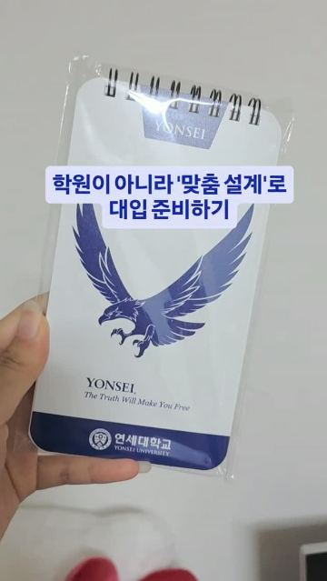
학원이 아니라 '맞춤 설계'로 입시 준비하기가 요즘 중요한데
릴스 · 10.2 시작 · Min_trip (파트너십)
| 노출 순위 | 소재 | 브랜드 | 종류 | 게재 기간 | 집행 수 | 첫 줄 | 구분 |
|---|---|---|---|---|---|---|---|
| 1 | 설탭 설탭 | 단일 | 33일 10.14~ | 8 | ✨ 설탭은 이렇게 다릅니다. | 검증 | |
| 2 | 설탭 설탭 | 단일 | 33일 10.14~ | 2학기 성적 역전한 아이들, 뭐가 달랐을까요?🧐 | 검증 | ||
| 5 | 비상 온리원 레슨 비상교육 온리원 레슨 | 단일·릴스 | 46일 10.1~ | 14 | 중학생을 위한 단 하나의 원 포인트 과외, 비상교육 온리원 레슨 | 검증 | |
| 7 | 설탭 설탭 | 단일 | 19일 10.28~ | 공부 습관을 만들어주고 싶다면, ‘설탭’하세요 🔥 | |||
| 10 | 아이엠쌤 비전교육 아이엠쌤 | 단일 | 40일 10.7~ | “지난 시험 40점대 였는데 이번엔 85점이라고요?” 😮 | 검증 | ||
| 12 | 밀당PT 밀당PT | 단일 | 13일 11.3~ | 6 | ✨대한민국 상위 0.1%의 강력추천✨ | 신규 급상승 | |
| 15 | 아이엠쌤 비전교육 아이엠쌤 | 단일 | 69일 9.8~ | “수학 40점대였는데 한 달 만에 85점? 이게 진짜 가능하다고요?” 😳 | 검증 | ||
| 20 | 아이엠쌤 비전교육 아이엠쌤 | 단일 | 109일 7.30~ | 🚨 [속보] "학원 끊고 과외로 바꾸자마자 성적이 올랐어요!" | 검증 | ||
| 22 | 비상 온리원 레슨 비상교육 온리원 레슨 | 단일 | 5일 11.11~ | 중학생을 위한 단 하나의 원 포인트 과외, 비상교육 온리원 레슨 | 신규 급상승 | ||
| 23 | 설탭 설탭 | 단일 | 19일 10.28~ | 내신 1등급 이상 올리고 싶다면, ‘설탭’하세요! 🔥 | |||
| 24 | 밀당PT 에듀관리가이드 | 단일 | 76일 9.1~ | ✅대한민국 상위 0.1%의 강력추천✅ | 검증 | ||
| 26 | 아이엠쌤 비전교육 아이엠쌤 | 단일 | 85일 8.23~ | "엄마, 나 오늘 학원 가기 싫어..." 😭 | 검증 | ||
| 27 | 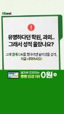 | 엠베스트 중등인강 1위 엠베스트 | 단일 | 77일 8.31~ | 유명 학원도, 과외도 시켜봤는데 | 검증 | |
| 29 | 스마트올중학 스마트올중학 | 릴스 | 5일 11.11~ | 2 | 성적이 오를 수 밖에 없는 비법!📈 | 신규 급상승 | |
| 31 | 설탭 엄마학교 | 단일 | 48일 9.29~ | 고등학교 가기 전 지금이 자기주도 습관을 만들 수 있는 마지막 타이밍입니다. | 검증 | ||
| 34 | 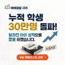 | 아이엠쌤 비전교육 아이엠쌤 | 단일 | 98일 8.10~ | 🚨 "학원비만 축내고 있을 건가요?" 언제까지 남의 집 아이 성적 올려주는 들러리 | 검증 | |
| 35 | 이지수능교육 ezedu_insta | 릴스 | 12일 11.4~ | 📢 대입 성공의 70%는 '고등학교 선택'에서 결정됩니다! | 신규 급상승 | ||
| 42 | 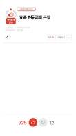 | 이지수능교육 ezedu_insta | 릴스 AI 이미지 | 1일 11.15~ | 요즘 내신 🚨5등급제 근황🚨 | 신규 급상승 | |
| 43 | 설탭 설탭 | 릴스 | 24일 10.23~ | 학원에서 모르는 거 있어도 | |||
| 47 | 설탭 내신완성 | 단일 | 48일 9.29~ | “1개월만에 책상에 스스로 앉더라니까요!” | |||
| 48 | 이지수능교육 ezedu_insta | 릴스 | 8일 11.8~ | 수포자였던 우리 딸이 수학 🔥전교 1등🔥 | 신규 급상승 | ||
| 51 | 설탭 입시달인 | 단일 | 39일 10.8~ | 중간고사 망친 이유는 본인이 더 잘 알겁니다. | |||
| 57 | 콴다과외 콴다 | 릴스·단일 | 18일 10.29~ | 26 | 🎓명문대 선생님과 1:1온라인과외 | ||
| 59 | 설탭 설탭 | 단일 | 24일 10.23~ | ⏰학원은 정해진 시간에, 설탭은 우리 아이 시간에! | |||
| 60 | 설탭 입시달인 | 단일 | 3일 11.13~ | 🚨 지금 필요한 건 또 다른 학원이 아니라, | 신규 급상승 | ||
| 61 | 콴다과외 콴다 | 릴스·단일 | 5일 11.11~ | 2 | 다가오는 기말고사, | ||
| 62 | 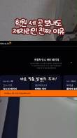 | 이지수능교육 여투리(파트너십) | 릴스 | 45일 10.2~ | 학원을 세 군데나 돌려도 제자리걸음인 성적표를 볼 때마다 가슴이 철렁 내려앉더라고요 | ||
| 64 | 설탭 설탭 | 릴스 | 26일 10.21~ | 이 결과를 보고도 고등학생은 늦었다고요? 설탭에는 고등 중하위권의 역전 사례가 넘쳐 | |||
| 65 | 아이엠쌤 비전교육 아이엠쌤 | 단일 | 116일 7.23~ | "진작 1:1 과외 시킬 걸 그랬어요..." | |||
| 74 | 설탭 설탭 | 단일 | 24일 10.23~ | ✨ 학원 오가는 시간은 줄이고, 공부할 시간은 늘리고! | |||
| 76 | 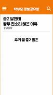 | 이지수능교육 ezedu_insta | 릴스 AI 이미지 | 6일 11.10~ | 중2 딸에게 공부 잔소리 이제 안 해요 | ||
| 78 | 설탭 입시달인 | 단일 | 4일 11.12~ | 고등학교 가기 전 지금이 자기주도 습관을 만들 수 있는 마지막 타이밍입니다. | |||
| 79 | 상상코칭 상상코칭 | 단일 | 3일 11.13~ | 수업 없는 날, 우리 아이 공부는 누가 챙기나요? | |||
| 82 | 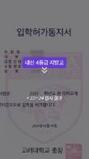 | 설탭 설탭 | 릴스 | 26일 10.21~ | 2등급 이상 상승, 인서울 합격을 만들어주는 1:1 SKY 과외 설탭. | ||
| 83 | 이지수능교육 ezedu_insta | 단일 | 24일 10.23~ | 약술논술 양으로 승부하면 집니다🔥 | |||
| 84 | 설탭 설탭 | 단일 | 3일 11.13~ | 우리 아이에게 잘 맞는 과외 선생님, | |||
| 87 | 이지수능교육 ezedu_insta | 단일 | 34일 10.13~ | 학원 조교의 🔥단순한 첨삭🔥 거절합니다 | |||
| 88 | 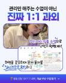 | 설탭 설탭 | 단일 | 48일 9.29~ | 관리만 해주는 가짜 수업이 아닌, 설탭은 실시간 소통으로 1:1 밀착 수업해주는 진 | ||
| 89 | 설탭 설탭 | 단일 | 48일 9.29~ | 중간고사 5문제 더 맞추는 방법? | |||
| 90 | 밀당PT 에듀PT | 릴스 AI 의심 | 4일 11.12~ | 아이는 스스로 공부하는 습관을, 부모는 퇴근 후 여유를 | |||
| 91 | 설탭 입시달인 | 릴스 AI 판별불가 | 10일 11.6~ | 한 달만에 20점 급상승 만드는 | |||
| 94 | 이지수능교육 ezedu_insta | 릴스 | 46일 10.1~ | 수포자였던 나🔥 이걸로 성균관대 합격까지! | |||
| 108 | 이지수능교육 ezedu_insta | 릴스 | 46일 10.1~ | 학원을 5번이나 바꿨는데🔥 | |||
| 109 | 아이엠쌤 비전교육 아이엠쌤 | 단일 | 40일 10.7~ | “문제를 틀린 것보다 더 무서운 건, 왜 틀렸는지 모르는 것입니다.” 😥 | |||
| 113 | 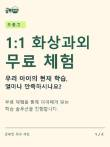 | 공부밥 공부밥 | 캐러셀 | 5일 11.11~ | “우리 아이, 공부 습관부터 잡아야 할까요? 어려워하는 과목을 먼저 도와줘야 할까요 | ||
| 114 | 설탭 입시달인 | 단일 | 11일 11.5~ | 올해 남은 성적 기대도 안 된다면? | |||
| 124 | 설탭 설탭 | 단일 | 47일 9.30~ | 😢 방학으로 망가진 생활패턴 지금이라도 바로 잡고 싶다면, 2학기는 우리 아이 한 | |||
| 127 | 이지수능교육 ezedu_insta | 단일 | 46일 10.1~ | 2 | 지난 학기와 다르게 | ||
| 128 | 설탭 입시달인 | 단일 | 11일 11.5~ | 올해가 가기전 1등급 받아보고 싶다면 지금 기말역전반에서 확실한 성적 변화 경험해보 | |||
| 132 | 설탭 설탭 | 단일 | 22일 10.25~ | ✨ SKY 선생님이 우리 아이 공부를 1:1로 책임진다면? ✨ | |||
| 135 | 콴다과외 콴다 | 단일 | 5일 11.11~ | 4 | 기말고사, 혼자 공부하다 막히고 있다면? 🐯 | ||
| 139 | 아이엠쌤 비전교육 아이엠쌤 | 단일 | 40일 10.7~ | “분명 공부는 하는데, 왜 성적은 그대로일까요?” 🤔 | |||
| 146 | 이지수능교육 Jlikeyou(파트너십) | 릴스 | 5일 11.11~ | 아이 학원은 꾸준히 보내고 있는데 | |||
| 147 | 이지수능교육 ezedu_insta | 단일 | 18일 10.29~ | 과목 공부, 탐구 활동, 수행 평가 | |||
| 148 | 이지수능교육 ezedu_insta | 단일 | 4일 11.12~ | 대입 논술 🔥채점기준 A인데 B를 적고 있나요?🔥 | |||
| 156 | 이지수능교육 ezedu_insta | 단일 | 46일 10.1~ | 이 3가지만 챙기면 내신 등급 급상승⤴️ | 장기·저노출 | ||
| 157 | 아이비에듀 아이비에듀 | 릴스 | 1일 11.15~ | 선생님과 학생이 얼굴을 마주 보며 | |||
| 158 | 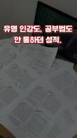 | 이지수능교육 ezedu_insta | 릴스 | 46일 10.1~ | 딱 하나 바꾸니 불수능에도 2등급 상승🔥 | 장기·저노출 | |
| 162 | 프리마에듀 프리마에듀 | 단일 | 13일 11.3~ | SKY선생님의 맞춤 수업 | |||
| 166 | 설탭 설탭 | 단일 | 11일 11.5~ | 올해가 가기전 1등급 받아보고 싶다면 지금 기말역전반에서 확실한 성적 변화 경험해보 | |||
| 177 | 설탭 설탭 | 단일 | 3일 11.13~ | ”제 딸 맞나 싶을 정도로 애가 책상에 스스로 앉더라니까요!” | |||
| 178 | 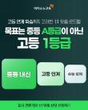 | 이지수능교육 ezedu_insta | 단일 | 46일 10.1~ | 중학교에서 A등급을 받아도 | 장기·저노출 | |
| 179 | 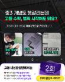 | 설탭 입시달인 | 단일 | 4일 11.12~ | “예비고1 고등 내신 대비, 언제부터 시작해야하나요?” | ||
| 188 | 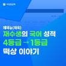 | 아침밥공부 아침밥공부 | 단일·캐러셀 | 62일 9.15~ | 6 | ⚠️학원, 과외 성적이 오르지 않는다면⚠️ | 장기·저노출 |
| 191 | 이지수능교육 ezedu_insta | 단일 | 46일 10.1~ | 열심히는 하는데 항상 성적은 그대로? | 장기·저노출노출수 적음 | ||
| 199 | 이지수능교육 ezedu_insta | 단일 | 3일 11.13~ | 가깝다고 그냥 보내시겠습니까? | 노출수 적음 | ||
| 202 | 이지수능교육 ezedu_insta | 단일 | 46일 10.1~ | 공부는 열심히 하는데 왜 내신 성적은 제자리일까? 😥 | 장기·저노출노출수 적음 | ||
| 204 | 이지수능교육 ezedu_insta | 단일 | 46일 10.1~ | 🎓 실제 이지수능교육 선배가 증명하는 성적 역전 공식 | 장기·저노출노출수 적음 | ||
| 205 | 설탭 입시달인 | 단일 | 3일 11.13~ | 🚨 기말고사까지 단 4주! | 노출수 적음 | ||
| 226 | 설탭 엄마학교 | 릴스 | 48일 9.29~ | 워킹맘분들 중학생 공부 어떻게 시키고 계세요? | 장기·저노출 | ||
| 234 | 설탭 입시달인 | 단일 | 48일 9.29~ | 고등학교 가기 전 지금이 자기주도 습관을 만들 수 있는 마지막 타이밍입니다. | 장기·저노출 | ||
| 235 | 이지수능교육 Min_trip(파트너십) | 릴스 | 45일 10.2~ | 학원이 아니라 '맞춤 설계'로 입시 준비하기가 요즘 중요한데 | 장기·저노출 | ||
| 270 | 설탭 대치동언니 | 릴스 | 3일 11.13~ | 중간 망했다고 포기하면 나중에 200% 후회해요. |
| 키워드 | 노출 1위 | 게재 기간 |
|---|---|---|
| 화상과외 (4건) | 아이비에듀 CM 릴스 2종 | 11/10 시작, 6일째 |
| 화상 과외 (5건) | 상상코칭 '수업 없는 날' | 11/13 시작, 3일째 |
| 비대면 과외 (9건) | 아이비에듀 CM → 대입전략연구소 3종(3·5·6위) | — |
| 온라인 과외 (31건) | 설탭 '이렇게 다릅니다' | 10/14 시작, 33일째 |
'화상과외' 단어를 쓰는 광고는 전부 시작 1~2주 이내 신작이라 아직 검증 여부를 말하기 이르다.
약속 선생님부터 성적까지 책임
근거 SKY·의치한약수 쌤, 집에서, 원하는 시간
적 학원, 관리형 '가짜 수업'
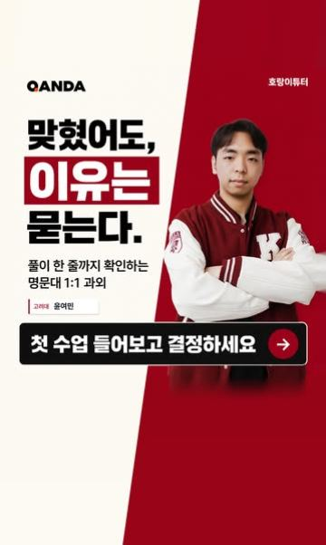
약속 명문대 쌤을 월 10만원대에
근거 녹화 다시보기, 설명시키기
적 없음
약속 공부도 PT처럼 밀착 관리
근거 AI 진단 + 1타 강의 + 명문대 쌤
적 없음 (권위 인용)
약속 입시 방향을 설계
근거 담임 컨설턴트, 학교별 족보, 27년
적 학원식 진도, 조교 첨삭
약속 점수가 바뀐다 (40→85)
근거 결과 숫자, 30만 학부모
적 대형 학원(들러리)
본문 전체를 세어본 결과 (설탭 하단 학원 고지문 제외, 밀당PT는 3종이라 제외).
| 소재 1개당 평균 등장 | 설탭 (29) | 이지수능 (21) | 콴다 (5) | 아이엠쌤 (8) |
|---|---|---|---|---|
| SKY·명문대 | 1.7 | 0 | 3.4 | 0 |
| 무료·0원 | 1.3 | 0 | 2.0 | 1.0 |
| 학원 언급 | 1.0 | 0.6 | 0 | 2.5 |
| 오답·틀린·이해·설명 | 0.1 | 0.05 | 1.8 | 3.1 |
| 입시·대입·수시 | 0.6 | 1.1 | 0 | 0 |
| 맞춤 | 0.9 | 1.6 | 0 | 2.4 |
| 본문 길이(자) | 413 | 292 | 330 | 562 |
| 이모지 수 | 8.2 | 6.0 | 5.8 | 9.5 |
| 해요체 비율(문장 끝) | 81% | 43% | 67% | 36% |
| 결과 숫자 넣은 소재 | 15/29 | 9/21 | 2/5 | 3/8 |
공식 [학원·인강 다 해봤는데] + [성적 그대로?]
예 지금 필요한 건 또 다른 학원이 아니라
누가 설탭·아이엠쌤·이지·엠베스트
공식 [부모 대사 인용] + [아이 변화 장면]
예 제 딸 맞나 싶을 정도로 스스로 앉더라
누가 설탭 서브·이지 인플루언서·아이엠쌤
공식 [before] → [after] + [기간]
예 40점대 → 85점
누가 아이엠쌤·설탭·이지·아이비
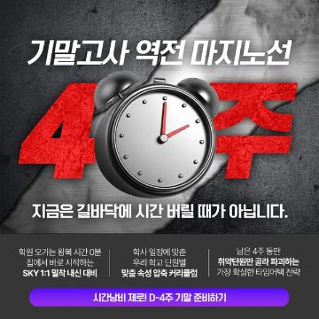
공식 [남은 시간] + [지금 안 하면]
예 기말고사까지 단 4주
누가 설탭(주력)·콴다
공식 [알던 것] → [실제는]
예 5등급제로 예전 4등급이 요즘 2등급
누가 이지(주력)·아이엠쌤 1
공식 [~한다면?] [뭐가 달랐을까요?]
예 2학기 역전한 아이들 뭐가 달랐을까
누가 설탭·콴다·공부밥·상상코칭
공식 [우리는 이렇게 다르다] / [권위 인용]
예 설탭은 이렇게 다릅니다 / 상위 0.1% 추천
누가 설탭 본계정·밀당·콴다·비상
| 층 | 내용 | 고정 정도 |
|---|---|---|
| 약속 | 선생님부터 성적까지 책임 / 국내·업계 1위 | 랜딩 제목·설명에 항상 고정 |
| 근거 | SKY·의치한약수 쌤, 4단계 검증, 성향·목표대학 매칭 | 거의 모든 소재 |
| 수업 방식 | 태블릿 실시간, 자습 트래킹, 매 수업 리포트, 집에서·원하는 시간 | 소재마다 하나씩 주인공 |
| 오퍼 | 무료수업 2회~최대 2개월, 첫 수업 불만족 100% 환불, 맞는 쌤 없으면 0원 | 시즌별 '반' 상품에 묶어 항상 |
| 가격 | 중등 19만~ / 고등 24만~ | 하단 고지로 항상 공개 |
브랜드가 말하는 체크리스트형
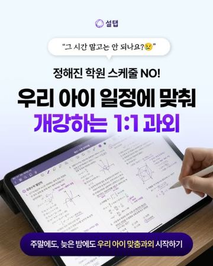
이동 0분·원하는 시간
엄마 후기 4등급→1등급
체크리스트·시즌 마감
| 시기 | 상품명 / 각도 |
|---|---|
| 9월 말 | 2학기 내신완성반, 방학으로 망가진 생활패턴, 중간고사 5문제 더 |
| 10월 중순 | 브랜드 차별점 복제 8개 물량 집행, 편의·리포트·시간 측면 소재 |
| 10월 말 | '설탭'하세요 캠페인, 내신 1등급 |
| 11월 초 | 기말역전반 (한 달 20점, 1등급) |
| 11월 중순 | 기말 D-4주, 예비고1 내신대비반(100일), 엄마 후기, 지역 무관 매칭 |
| 증거 유형 | 예 | 주 사용 | 신규가 쓸 수 있나 |
|---|---|---|---|
| 권위(선생님 스펙) | SKY·의치한약수, 명문대, 4단계 검증 | 설탭·콴다·밀당·프리마 | 가능. 단 포화 |
| 규모·업력 | 14만 명, 30만 학부모, 16억 데이터, 27년 | 이지·아이엠쌤·밀당 | 불가 |
| 서열 | 국내 1위, 업계 1위 | 설탭·엠베스트 | 불가 |
| 결과 숫자 | 40→85점, 4→1등급, 만족도 98% | 아이엠쌤·설탭·이지·아이비·프리마 | 불가 |
| 후기·증언 | 엄마 1인칭, 합격 후기, 인플루언서 | 설탭 서브·이지·아이엠쌤 | 불가 |
| 메커니즘(수업 방식) | 다시보기, 설명시키기, 자습 트래킹, 리포트 | 콴다·설탭·아이비 | 가능. 실제 기능만 |
| 오퍼 | 설탭 | 콴다 | 밀당PT | 이지 | 아이엠쌤 |
|---|---|---|---|---|---|
| 무료 체험 | 무료수업 2회~2개월 | 첫 수업 무료 / 2회 | — | 상담만 | 무료 레벨테스트 |
| 환불 | 첫 수업 불만족 100% | 첫 수업 후 불만족 100% | 7일 내 100% | — | — |
| 가격 공개 | 중 19만~ / 고 24만~ | 월 10만원대 | — | — | — |
| 할인·혜택 | 인강+AI 튜터 무료 | 163만원 혜택 | 최대 20만원 | — | 기출문제집 |
| 희소성 | 선착순 80명 | — | 23/30 마감 | 선착순 50명 | 선착순 |
쌤이다 기준: 신규라 후기·결과 숫자 없음 / 화자 = 엄마(해요체) / 타깃 = 고1·2 + 중등 학부모 / 없는 기능 안 씀 / 입시 컨설팅 약속 안 함.
| 각도 | 경쟁 밀도 | 누가 | 쌤이다 |
|---|---|---|---|
| SKY·명문대 쌤 스펙 | 매우 높음 | 설탭·콴다·밀당·프리마 | 차별 0 |
| 학원 다녀도 그대로 | 매우 높음 (19종) | 설탭·아이엠쌤·이지 | 묻힘 |
| 엄마 후기·점수 before→after | 높음 | 설탭 서브·이지·아이엠쌤 | 불가 |
| 무료수업 + 환불 | 업계 표준 | 거의 전부 | 입장권 |
| 시즌 카운트다운 | 중간 | 설탭 독주 | 물량 열세 |
| 이해 확인·설명시키기·오답 이유 | 상승 중 | 콴다(11/11~), 아이엠쌤 | 콴다 선점 중 |
| 입시 상식 반전 | 낮음 (이지 약 4종) | 이지 | 검증 안 됨 (46일째 소재가 178위) |
| 방문과외 불편 해소·부모 참관 | 낮음 | 대입전략연구소 | 선점됨 |
| 선생님 개인 노출 | 거의 없음 | 콴다 튜터 1 | 가능 |
| 화상 수업 실제 화면 | 거의 없음 | 아이비 1 | 가능 |
| 고1·2 학부모 특화 | 낮음 | 설탭 일부·이지 논술 | 가능 |
정보 반전, 합니다체
정보 반전
정보 반전 + 대조
설명시키기 메커니즘
| 표현 | 선점한 곳 |
|---|---|
| 진짜 과외 / 가짜 수업 | 설탭 |
| 'OO'하세요 (브랜드명 동사화) | 설탭 |
| 선생님부터 성적까지 책임 | 설탭 |
| 이동 0분 / 전국 어디서나 태블릿 하나로 | 설탭 |
| 대치동 화제의 클래스 / 대치동 엄마들이 선택 | 설탭 서브, 아이엠쌤 |
| 공부도 PT | 밀당PT |
| 맞혔어도 이유는 묻는다 / 설명해보라고 하면 막히는 자리 | 콴다 |
| 정답보다 '이유' / 왜 틀렸는지 모르는 게 무서움 | 아이엠쌤 |
| 5등급제로 예전 4등급이 요즘 2등급 | 이지 |
| 대입 성공의 70%는 고교 선택 | 이지 |
| 학원은 진도, 과외는 성적 | 이지 |
| 집 안 치워도 됩니다 / 낯선 사람 안 와도 / 부모 직접 참관 | 대입전략연구소 |
| 지방이라 대치동 과외는 꿈도 못 꾸셨나요 | 대입전략연구소 |
Meta 광고 라이브러리의 'AI 생성' 표시는 79종 전부 없음. 릴스 21개(+아이비 CM 2개)에서 프레임을 5장씩 뽑아 직접 봤다. 프레임 기준 추정이며 확정 아님. 아래 소재 카드에도 보라색 딱지로 표시.
이지 · 요즘 5등급제 근황
가짜 커뮤니티 게시글 UI + 같은 화풍 AI 일러스트 캐릭터
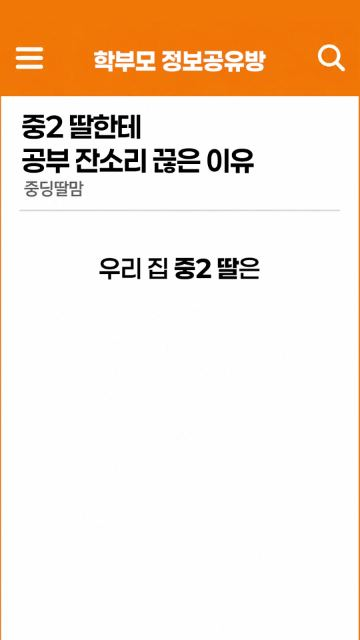
이지 · 중2 딸 잔소리 안 해요
가짜 '학부모 정보공유방' 앱 화면 + 같은 화풍 일러스트
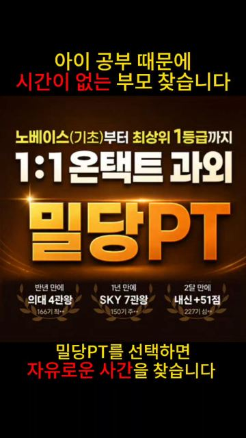
밀당PT(에듀PT) · 시간이 없는 부모
야간 방 안 시네마틱 장면, 생성 이미지 질감
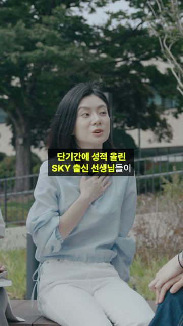
설탭(입시달인) · 한 달 20점
첫 장면 여성 클로즈업이 드라마 캡처 또는 생성
광고 라이브러리 정렬 = 총 노출수 높은 순. 노출수 숫자는 비공개, 순서와 '노출수 적음' 표시만 나온다. 2026-11-16 기준.
| 키워드 | 결과 | 노출 상위 (순서대로) |
|---|---|---|
| 화상과외 | 4건 | 1 아이비에듀 CM '공부 하시렵니까?'(릴스) · 2 아이비에듀 CM '성적 향상 아이비'(릴스) · 3 공부밥 상담형(캐러셀) · 4 아이비에듀 '얼굴 마주 보는 1:1 화상과외'(릴스) |
| 화상 과외 | 5건 | 1 상상코칭 '수업 없는 날'(단일) · 이하 방문과외·무관 광고, 노출수 적음 |
| 비대면 과외 | 9건 | 1 아이비에듀 CM · 2 재테크 클래스(무관) · 3·5·6 대입전략연구소 3종 · 8·9 이지수능(노출수 적음) |
| 온라인 과외 | 31건 | 1 설탭 '이렇게 다릅니다' · 2 아이비에듀 CM · 4~9·11 설탭 같은 소재 복제 · 10 비상 온리원 · 14 설탭 '학원 시간 vs 아이 시간' · 16 설탭 '왕복 시간' · 17 설탭(입시달인) 한 달 20점 · 21 설탭 'SKY가 책임진다면' · 25 프리마에듀 |
| 1:1 과외 | 약 340건 | 1·2·4 설탭 · 5 비상 · 7~10 설탭 · 11 아이엠쌤 40→85 · 13·14 밀당PT · 16 아이엠쌤 · 18 밀당PT · 21 아이엠쌤 [속보] · 29 스마트올 · 35 이지 고교선택 · 42 이지 5등급제 · 43 설탭 질문 · 61 콴다 기말 |
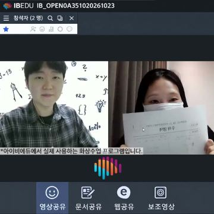
아이비에듀 · 얼굴 마주 보는 1:1 화상과외
설탭 · 이렇게 다릅니다 (복제 8개)
상상코칭 · 수업 없는 날
아이엠쌤 · 40점대→85점
화상(비대면)이라는 형식 자체를 장점으로 파는 유일한 곳.
| 브랜드 | 소재 | 단일 | 릴스 | 캐러셀 | 여러 버전 | 주력 훅 | 주력 넛지 |
|---|---|---|---|---|---|---|---|
| 설탭 | 29 | 23 | 6 | 0 | 페인 공감 8 · 질문형 7 · 결과 숫자 7 | 무료 체험 17 · 위험 제거(환불·0원) 9 · 사회적 증거 7 | |
| 이지수능교육 | 21 | 11 | 10 | 0 | 7 | 후기·증언 8 · 정보·반전 5 · 질문형 5 | 권위(SKY·업력) 11 · 손실 회피 9 · 사회적 증거 9 |
| 콴다과외 | 5 | 3 | 2 | 0 | 1 | 질문형 3 · 시즌·마감 3 · 오퍼 선언 2 | 무료 체험 5 · 긴급성(D-day) 3 · 가격·혜택 앵커 2 |
| 밀당PT | 3 | 2 | 1 | 0 | 권위·인용 2 · 차별점 선언 2 | 권위(SKY·업력) 2 · 가격·혜택 앵커 2 · 위험 제거(환불·0원) 2 | |
| 아이비에듀 | 1 | 0 | 1 | 0 | 차별점 선언 1 · 결과 숫자 1 | 구체적 숫자 1 · 편의(이동 0·시간) 1 | |
| 상상코칭 | 1 | 1 | 0 | 0 | 질문형 1 | 가격·혜택 앵커 1 · 희소성(선착순) 1 · 위험 제거(환불·0원) 1 | |
| 프리마에듀 | 1 | 1 | 0 | 0 | 권위·인용 1 | 권위(SKY·업력) 1 · 구체적 숫자 1 · 무료 체험 1 | |
| 공부밥 | 1 | 0 | 0 | 1 | 질문형 1 | 무료 체험 1 | |
| 아침밥공부 | 4 | 1 | 0 | 3 | 페인 공감 4 | 무료 체험 4 | |
| 아이엠쌤(방문) | 8 | 8 | 0 | 0 | 후기·증언 3 · 결과 숫자 2 · 질문형 2 | 손실 회피 6 · 구체적 숫자 2 · 밴드왜건(대치동·맘카페) 2 | |
| 비상 온리원 레슨(인강) | 3 | 2 | 1 | 0 | 2 | 차별점 선언 3 | 권위(SKY·업력) 3 · 가격·혜택 앵커 3 · 구체적 숫자 3 |
| 스마트올중학(인강) | 1 | 0 | 1 | 0 | 결과 숫자 1 | 무료 체험 1 · 가격·혜택 앵커 1 | |
| 엠베스트(인강) | 1 | 1 | 0 | 0 | 1 | 페인 공감 1 · 질문형 1 | 권위(SKY·업력) 1 · 무료 체험 1 · 사회적 증거 1 |
설탭 = 본계정 + 입시달인·엄마학교·내신완성·대치동언니(랜딩 PR.SEOLTAB.COM). 밀당PT = 본계정 + 에듀PT·에듀관리가이드. 이지수능교육 = ezedu_insta + 학부모 인플루언서 파트너십. 릴스는 대표 화면. 카피 칸은 본문 요지 정리, 훅 칸 따옴표는 본문 첫 줄.
“🚨 지금 필요한 건 또 다른 학원이 아니라,”
학원을 늘리는 대신 아이 수준에 맞춘 1:1 학습 전략·오답 관리·습관 형성 → 기말역전과외 무료수업
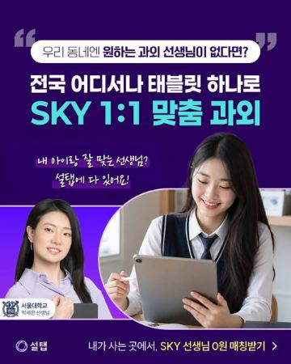
“우리 아이에게 잘 맞는 과외 선생님,”
동네엔 맞는 과외쌤이 없다 → 지역 무관 SKY/의치한약수 쌤을 성향 맞춰 무료 매칭
“”제 딸 맞나 싶을 정도로 애가 책상에 스스로 앉더라니까요!””
엄마 후기 인용 → 습관 잡힌 SKY 쌤이 1:1로 체질 개선, 중학생 첫 과외
“🚨 기말고사까지 단 4주!”
기말 D-4주, 학원 이동시간은 낭비 → 집에서 SKY 1:1·학교 일정 맞춤·취약단원 집중
“중간 망했다고 포기하면 나중에 200% 후회해요.”
엄마 체험담: 쌤이 고민 들어주고 자습 습관 생김 → 2등급→1등급, 포기하면 후회
“고등학교 가기 전 지금이 자기주도 습관을 만들 수 있는 마지막 타이밍입니다.”
고교 진학 전 마지막 타이밍 + 숙제·폰·흥미 체크리스트 → 자기주도 과외 무료 진단
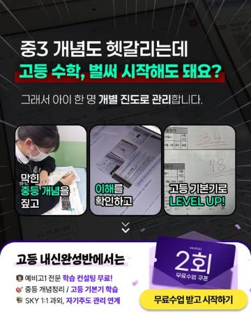
““예비고1 고등 내신 대비, 언제부터 시작해야하나요?””
예비고1 질문 인용, 남은 100일 → 전담 SKY 쌤 밀착, 맞는 쌤 없으면 0원
“한 달만에 20점 급상승 만드는”
한 달 20점 상승, 중간 망한 아이 → SKY 멘토 기말 역전 과외, 무료수업 2회
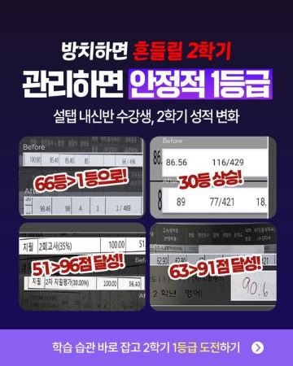
“올해 남은 성적 기대도 안 된다면?”
남은 성적 기대 안 되는 아이 유형 3가지 → 내신완성반(학사일정·학교별 기출·환불)
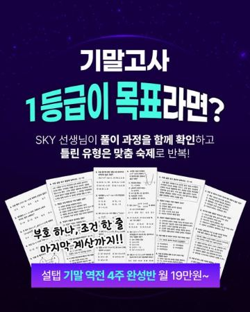
“올해가 가기전 1등급 받아보고 싶다면 지금 기말역전반에서 확실한 성적 변화 경험해보세요!💪 남은 2학기 내”
올해 가기 전 1등급 → 기말역전반, 아이 유형 3가지 체크, 무료수업 최대 2개월
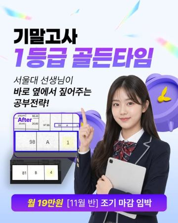
“올해가 가기전 1등급 받아보고 싶다면 지금 기말역전반에서 확실한 성적 변화 경험해보세요!💪 남은 2학기 내”
(본계정판) 기말역전반, 아이 유형 3가지, 첫 수업 불만족 환불
“공부 습관을 만들어주고 싶다면, ‘설탭’하세요 🔥”
'설탭'하세요 브랜드 동사화 → 현행 메우기·상위권 공부패턴 실천, 내신완성반 오퍼 스택
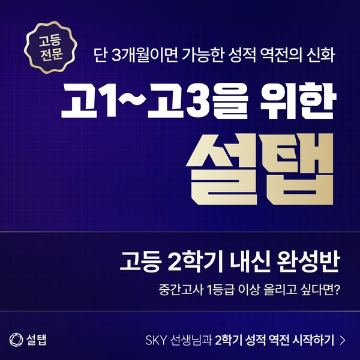
“내신 1등급 이상 올리고 싶다면, ‘설탭’하세요! 🔥”
내신 1등급 목표 + '설탭'하세요 → SKY 멘토 전략 끝까지 실행, 무료수업 추가
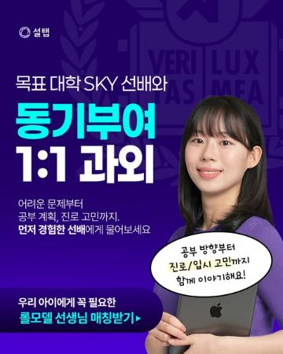
“✨ SKY 선생님이 우리 아이 공부를 1:1로 책임진다면? ✨”
SKY 쌤이 1:1로 책임진다면? → 4단계 검증 쌤·목표대학 매칭·멘토링, 월 19만원대
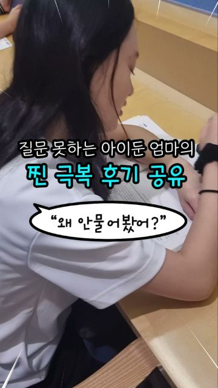
“학원에서 모르는 거 있어도”
엄마 관찰 스토리: 질문 못하던 아이가 방에서 쌤한테 질문 중 → 진작 1:1로 바꿀걸
“⏰학원은 정해진 시간에, 설탭은 우리 아이 시간에!”
학원은 정해진 시간, 설탭은 아이 시간 → 평일·심야·주말 유연 수업, 인강+AI 튜터 무료
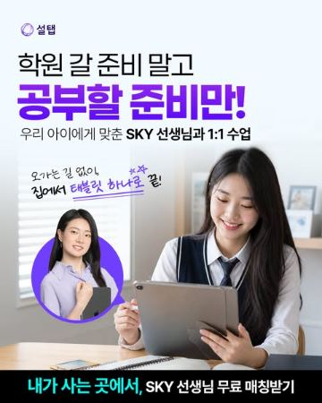
“✨ 학원 오가는 시간은 줄이고, 공부할 시간은 늘리고!”
학원 왕복 하루 1~2시간 낭비 → 태블릿으로 집에서 SKY 1:1, 첫 수업 불만족 환불
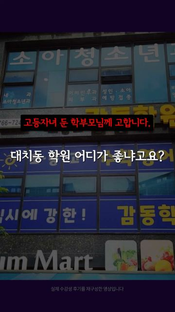
“이 결과를 보고도 고등학생은 늦었다고요? 설탭에는 고등 중하위권의 역전 사례가 넘쳐납니다.”
고등학생은 늦었다? 반박 → 2등급↑·인서울, SKY 멘토 4단계(동기·수업·자습트래킹·태도)
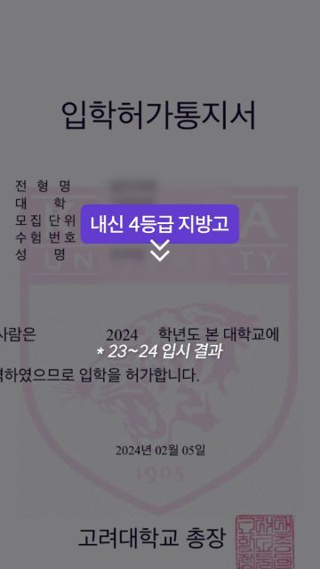
“2등급 이상 상승, 인서울 합격을 만들어주는 1:1 SKY 과외 설탭.”
2등급 이상 상승·인서울 합격 선언 → SKY 멘토 4단계 관리
“✨ 설탭은 이렇게 다릅니다.”
"이렇게 다릅니다" → 국내 1위 SKY 1:1·태블릿 실시간·과제/오답 관리 3포인트
“2학기 성적 역전한 아이들, 뭐가 달랐을까요?🧐”
2학기 역전한 아이들 뭐가 달랐나? → 답은 맞춤 전략, 1:1 집중 관리
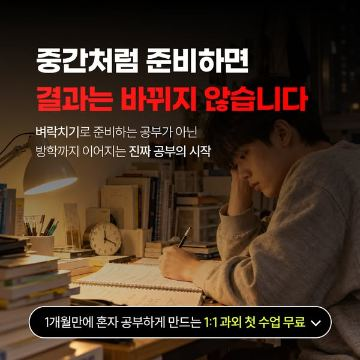
“중간고사 망친 이유는 본인이 더 잘 알겁니다.”
중간 망친 이유는 본인이 안다 → 겨울방학까지 이어지는 1:1 전담 수업, 무료수업 2회
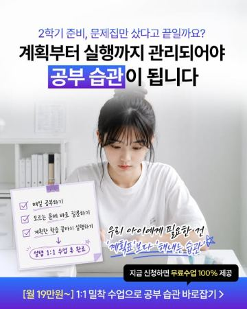
“😢 방학으로 망가진 생활패턴 지금이라도 바로 잡고 싶다면, 2학기는 우리 아이 한명 단독으로 공부 방법부터”
방학으로 망가진 생활패턴 → 2학기 1:1로 공부법·습관, 내신완성반 오퍼
“고등학교 가기 전 지금이 자기주도 습관을 만들 수 있는 마지막 타이밍입니다.”
고교 전 마지막 타이밍 + 문제 행동 체크리스트 → 대치동 엄마들이 선택한 자기주도 과외
““1개월만에 책상에 스스로 앉더라니까요!””
엄마 후기: 1개월 만에 스스로 책상에 → 학원·인강 실패 후 SKY 쌤 1:1 체질 개선
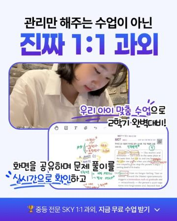
“관리만 해주는 가짜 수업이 아닌, 설탭은 실시간 소통으로 1:1 밀착 수업해주는 진짜 과외 수업입니다.”
관리만 해주는 가짜 수업 vs 실시간 1:1 진짜 과외 → 내신완성반
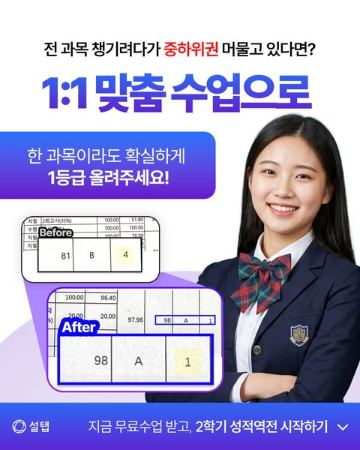
“중간고사 5문제 더 맞추는 방법?”
중간고사 5문제 더 맞추는 방법? → 진단·계획·수업 1:1, 선착순 80명 무료수업
“워킹맘분들 중학생 공부 어떻게 시키고 계세요?”
워킹맘 공감 질문 → 종일 학원 없이 '이것'만 시켜도 스스로 공부 (정답은 랜딩에서)
“고등학교 가기 전 지금이 자기주도 습관을 만들 수 있는 마지막 타이밍입니다.”
고교 전 마지막 타이밍 + 체크리스트 (입시달인판)
“요즘 내신 🚨5등급제 근황🚨”
5등급제 근황: 예전 4등급이 요즘 2등급 → 기출 분석·전용 족보·1:1 약점 보완
“가깝다고 그냥 보내시겠습니까?”
가깝다고 그냥 보내시겠습니까? → 고교 선택부터 대입 전략, 27년 노하우·로드맵·AI 예상문제
“대입 논술 🔥채점기준 A인데 B를 적고 있나요?🔥”
논술 채점기준 A인데 B 쓰고 있나? → 27년 데이터로 출제 의도, 1:1 논술 첨삭
“아이 학원은 꾸준히 보내고 있는데”
(학부모 인플루언서) 학원 보내도 제자리 → 27년 데이터·담임 컨설턴트 1:1 로드맵
“중2 딸에게 공부 잔소리 이제 안 해요”
엄마 후기: 중2 딸 잔소리 안 함, 학원 끊어도 스스로 → 성향 매칭·입시 컨설턴트
“수포자였던 우리 딸이 수학 🔥전교 1등🔥”
수포자 딸이 수학 전교 1등 → 성향·수준 맞춤 쌤 매칭, 수준별 교재
“📢 대입 성공의 70%는 '고등학교 선택'에서 결정됩니다!”
대입 성공 70%는 고교 선택 → 10년 컨설턴트 로드맵·1:1 중등 현행+표적 선행
“과목 공부, 탐구 활동, 수행 평가”
중학교 A가 고1 4등급? → 개념 보완+고등 선행, 최상위 강사 1:1
“약술논술 양으로 승부하면 집니다🔥”
약술논술 양으로 승부하면 진다 → 지원 대학 경향만 1권, 1:1 첨삭, 선착순 50명
“학원 조교의 🔥단순한 첨삭🔥 거절합니다”
학원 조교의 단순 첨삭 거절 → 목표 대학 맞춤 1:1 논술 첨삭
“학원을 세 군데나 돌려도 제자리걸음인 성적표를 볼 때마다 가슴이 철렁 내려앉더라고요 🥺 인강은 틀어놓고 멍”
(학부모 인플루언서) 학원 3곳 돌려도 제자리 → 이지고 담임 컨설턴트 1:1 분석, 14만 명 데이터
“학원이 아니라 '맞춤 설계'로 입시 준비하기가 요즘 중요한데”
(인플루언서) 학원이 아니라 맞춤 설계로 입시 준비
“수포자였던 나🔥 이걸로 성균관대 합격까지!”
학생 후기: 수포자 → 성균관대 합격, 1:1 맞춤·실시간 피드백
“학원을 5번이나 바꿨는데🔥”
학원 5번 바꿔도 영어 3등급 이유 → 학교별 출제 분석·전문강사 1:1
“지난 학기와 다르게”
똑같은 방법이면 성적 안 변한다 → 취약점 분석·1:1 초밀착, 14만 명 선택
“이 3가지만 챙기면 내신 등급 급상승⤴️”
이 3가지만 챙기면 내신 급상승 → 담임 시스템·과목별 1타 과외·학교 맞춤 족보
“딱 하나 바꾸니 불수능에도 2등급 상승🔥”
불수능에도 2등급 상승 → 경인교대 수시 합격, 근거 찾는 수업
“중학교에서 A등급을 받아도”
중학교 A ≠ 고등 1등급, 학원은 진도·과외는 성적 → 1:1 중등 밀착, 대면/비대면 선택
“열심히는 하는데 항상 성적은 그대로?”
열심히 하는데 성적 그대로? → 실수 습관 잡는 1:1, 420종 자체 교재, 대면/비대면
“공부는 열심히 하는데 왜 내신 성적은 제자리일까? 😥”
열심히 해도 내신 제자리 이유는 학교별 맞춤이 아니어서 → 학교 잘 아는 전담 강사 1:1
“🎓 실제 이지수능교육 선배가 증명하는 성적 역전 공식”
선배 사례: 중학 1:1 → 고교 1등급 → 고려대 입학
“다가오는 기말고사,”
기말 전 어디서 막힐까? → 호랑이튜터가 막힌 곳 확인·이유 이해·스스로 설명까지
“기말고사, 혼자 공부하다 막히고 있다면? 🐯”
기말 공부하다 막히면? → 호랑이튜터 1:1 개념·오답, 무료수업 2회
“다가오는 기말고사,”
기말 약점 점검 (단일 이미지판)
“🎓명문대 선생님과 1:1온라인과외”
명문대 쌤 1:1 온라인과외 → SKY 월 10만원대, 혜택 163만원, 첫 수업 무료+환불, 다시보기
“🎓명문대 선생님과 1:1온라인과외”
같은 오퍼 (단일 이미지·여러 버전, 25개로 쪼개 집행). 이미지 헤드라인 "맞혔어도, 이유는 묻는다"
“아이는 스스로 공부하는 습관을, 부모는 퇴근 후 여유를”
아이는 공부 습관, 부모는 퇴근 후 여유 → 1:1 온택트 과외
“✨대한민국 상위 0.1%의 강력추천✨”
상위 0.1% 추천 인용 → 16억 데이터 AI 진단+명문대 쌤+대치동 1타 강의, 20만원 할인·7일 환불
“✅대한민국 상위 0.1%의 강력추천✅”
상위 0.1% 추천 + "공부도 PT" → 과제·피드백·습관 밀착, 현금 10만원, 마감 카운트
“선생님과 학생이 얼굴을 마주 보며”
얼굴 마주 보는 1:1 화상과외, 질문·풀이 설명으로 이해 확인, 수학 43점 상승, 수업일지·카톡
“수업 없는 날, 우리 아이 공부는 누가 챙기나요?”
수업 없는 날 공부는 누가? → 과외비 하나에 온라인독서실·감독쌤, 주 7일, 장학금 15만원
“SKY선생님의 맞춤 수업”
SKY 쌤 맞춤 수업, 학부모 만족도 98% → 서류 검증·다시보기, 0원 체험·3개월 30% 할인
““우리 아이, 공부 습관부터 잡아야 할까요? 어려워하는 과목을 먼저 도와줘야 할까요?””
습관부터? 과목부터? 학부모 고민 질문 → 상담 후 맞춤 체험, DM '체험'
“⚠️학원, 과외 성적이 오르지 않는다면⚠️”
학원·과외로 안 오르면 → 4일 진단고사 100% 무료 후 수준별 수업
“⚠️학원, 과외 성적이 오르지 않는다면⚠️”
같은 카피, 캐러셀 6장
“⚠️학원, 과외 성적이 오르지 않는다면⚠️”
같은 카피, 캐러셀 5장
“⚠️학원, 과외 성적이 오르지 않는다면⚠️”
같은 카피, 캐러셀 4장
““지난 시험 40점대 였는데 이번엔 85점이라고요?” 😮”
40점대→85점 → 막히는 곳 파악하는 1:1 밀착 케어, 검증 쌤 매칭
““문제를 틀린 것보다 더 무서운 건, 왜 틀렸는지 모르는 것입니다.” 😥”
틀린 것보다 무서운 건 왜 틀렸는지 모르는 것 → 막힌 지점부터 1:1, 오답 원인 관리
““분명 공부는 하는데, 왜 성적은 그대로일까요?” 🤔”
공부는 하는데 성적 그대로? → 아이별 다른 5가지 요인, 성향 무료 진단
““수학 40점대였는데 한 달 만에 85점? 이게 진짜 가능하다고요?” 😳”
수학 40점대→한 달 85점? → 오답 원인 1:1, 실제 후기
“"엄마, 나 오늘 학원 가기 싫어..." 😭”
아이 대사 "학원 가기 싫어" → 1:1 방문과외, 이동 시간 절약
“🚨 "학원비만 축내고 있을 건가요?" 언제까지 남의 집 아이 성적 올려주는 들러리만 세우실 건가요?”
학원비만 축낸다, 남의 집 들러리 → 30만 학부모 선택, 무료 레벨테스트
“🚨 [속보] "학원 끊고 과외로 바꾸자마자 성적이 올랐어요!"”
[속보] 학원 끊고 과외로 성적 상승, 맘카페·대치동 화제 → 1:1 비밀 맞춤 과외
“"진작 1:1 과외 시킬 걸 그랬어요..."”
"진작 1:1 시킬 걸" 후회 → 대형학원 들러리, 1:1 방문 과외
“중학생을 위한 단 하나의 원 포인트 과외, 비상교육 온리원 레슨”
원 포인트 과외 = 비상교재+1타+AI코치, 10명 중 8명 최상위권, 아이패드 할인
“중학생을 위한 단 하나의 원 포인트 과외, 비상교육 온리원 레슨”
같은 오퍼 (릴스·여러 버전)
“중학생을 위한 단 하나의 원 포인트 과외, 비상교육 온리원 레슨”
같은 오퍼 (단일 이미지·여러 버전, 9개)
“성적이 오를 수 밖에 없는 비법!📈”
성적 오를 수밖에 없는 비법 → 0원 7일 체험, SKY 1:1 과외 동시수강 시 상품권
“유명 학원도, 과외도 시켜봤는데”
유명 학원·과외 다 해도 그대로? → 1타 강사·1:1 관리·AI 앱, 중등인강 1위
분석 범위: '1:1 과외' 키워드 검색으로 잡힌 활성 광고 79종 + 화상과외·화상 과외·비대면 과외·온라인 과외 검색. 이미지·영상 안 문구는 수치 집계 미포함. AI 판별은 프레임 기준 추정.